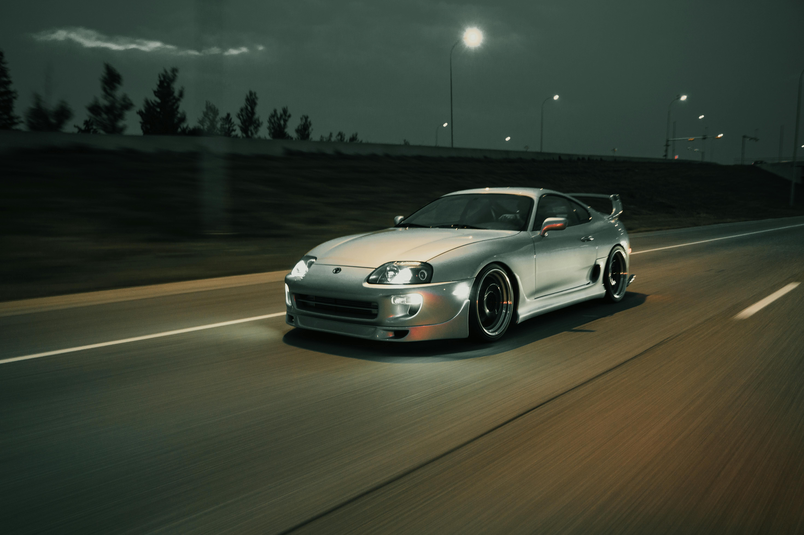

The Toyota Supra MK4, produced from 1993 to 2002, is one of the most iconic Japanese sports cars ever built. Known for its legendary 2JZ engine, timeless design, and motorsport heritage, it became a tuner’s dream and a pop culture icon.
• Engine: 3.0L inline-6 twin-turbocharged 2JZ-GTE producing 276 hp (JDM) or 320 hp (USDM).
• Torque: 431 Nm (318 lb-ft).
• Transmission: 6-speed Getrag V160 manual or 4-speed automatic.
• Drivetrain: Rear-wheel drive.
• 0–100 km/h in ~4.9 seconds.
• Top speed electronically limited to 250 km/h (155 mph).
• Huge tuning potential—capable of over 1,000 hp with modifications.
• Aerodynamic, flowing body lines with iconic rounded headlights.
• Lightweight construction with aluminum hood, targa roof option, and active front spoiler.
• Driver-focused cockpit with classic 90s analog gauges.
• Adjustable sport suspension for improved handling.
• Highly sought after by collectors and tuners worldwide.
• Clean, unmodified examples have seen prices exceed €100,000 in recent years.
• Popular in motorsport, drag racing, and drifting communities.
The Toyota Supra MK4 is a symbol of Japanese performance engineering. Whether in stock form or as a heavily tuned monster, it remains one of the most respected and desired sports cars of all time.
